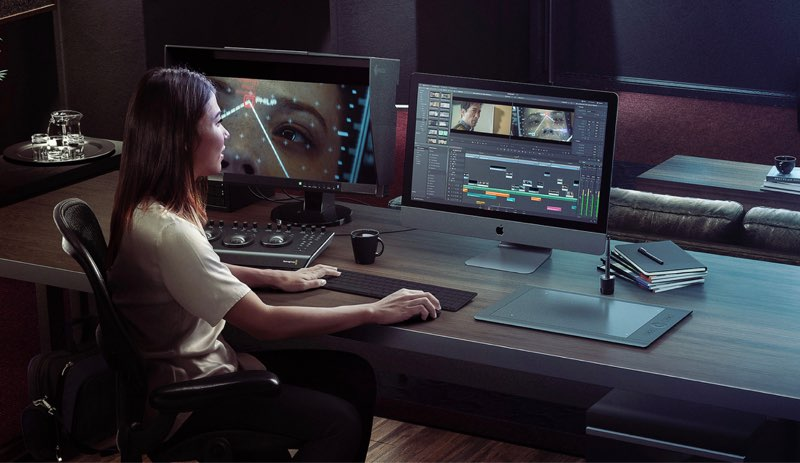

Frankel Julian
Je suis actuellement à la recherche d'une opportunité

Je suis passionné de sports 🔥
Découvrez mon profil ici !Montage vidéo 🖥️
Je suis passionné par la création vidéo sur logiciels
Web 🕹️

La technologie m'attire beaucoup, notamment le digital 📲
Voyages 🌍

J'adore découvrir des lieux ! ✔